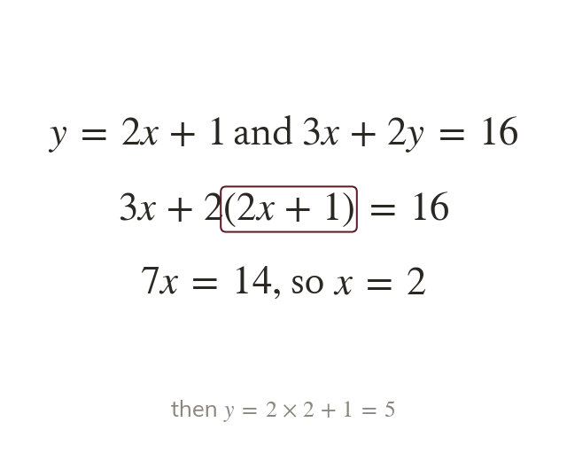
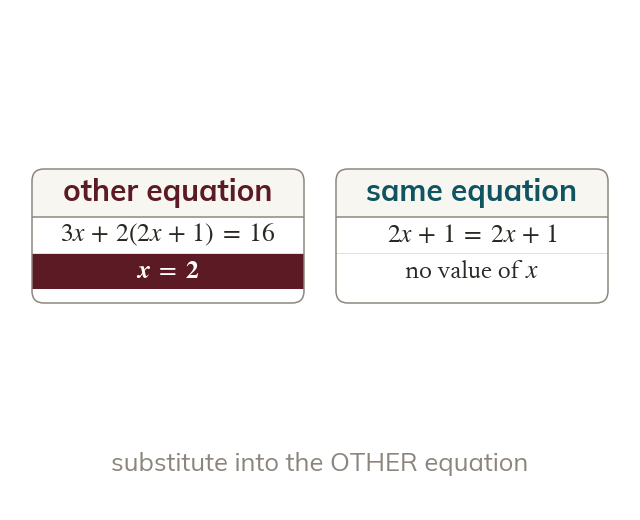
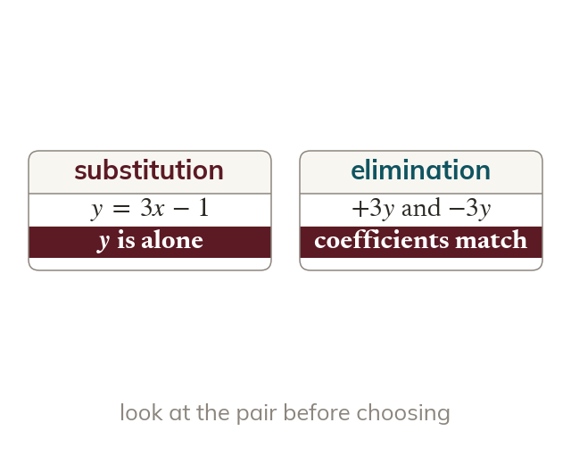
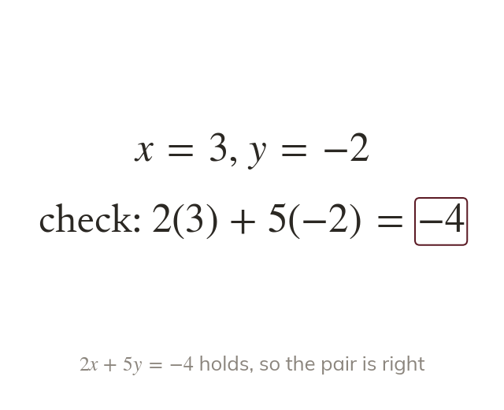

Replace the variable
An expression for y can replace y in the other equation. Bracket it, so any multiplication reaches every term.
A pair of equations where one variable is already alone, such as is quickest solved by substitution. Today we substitute with care, including negative and fractional solutions.
Work down the page at your own pace. Write every answer in your book first, then click to check it.
Read each card, then follow the worked examples one step at a time.

An expression for y can replace y in the other equation. Bracket it, so any multiplication reaches every term.

Substitute into the equation the expression did not come from. Its own equation only gives back an identity.
Pick an answer. If it's wrong, the feedback tells you which mistake it was.
Read each card, then follow the worked examples one step at a time.

Look at the pair before starting. A variable alone suits substitution; matching coefficients suit elimination.

Substitute both values into the equation not yet used. Both original equations must hold.
Pick an answer. If it's wrong, the feedback tells you which mistake it was.
Finished? Next lesson: 11H.3.2 Solving Non-Linear Simultaneous Equations.
Log in, then search for a code to practise that skill.
Videos, worksheets and more on each part of this lesson.